Aktuelle Berichte & News
Bericht schreiben2026

Schnellschach-Vereinsmeisterschaft 2026
Unsere diesjährige Schnellschach-Vereinsmeisterschaft haben wir als Kooperationsturnier mit der SU Ebersberg-Grafing gespielt.
Bericht lesen →
Kooperationsturnier GyKi feat. SG AFK 2026
Das Profiturnier unseres Kooperationsturniers mit dem Gymnasium Kirchheim (GyKi) konnten klar Poldi Elger und Stefans Kasims für sich entscheiden!
Bericht lesen →Herbstblitz 2026
Das Herbstblitz war mit 25 Teilnehmern gut besucht! Wir spielten (leicht) wahnsinnige 13 Runden Blitz bei 3 min Bedenkzeit.
Bericht lesen →
Duke Blitz - Runde 2
Am 16.9. fand die 2. Auflage unseres Blitzturniers in der Duke Bar in Aschheim statt. Es fanden sich 16 Spieler ein, und so wurde im Schweizersystem 7 Runden lang um jeden Punkt gekämpft.
Bericht lesen →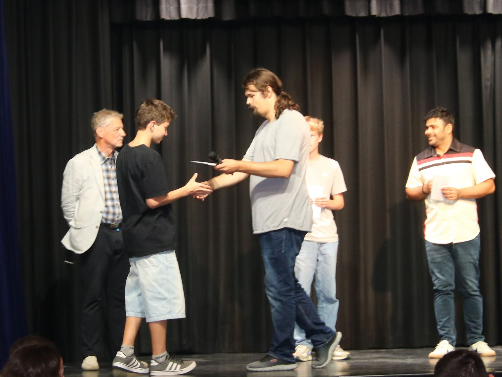
OIS 2026 - Dominik gewinnt C-Turnier!
Dominik Dax gewinnt souverän mit 6,5 aus 7 Punkten das C-Turnier!
Bericht lesen →Blitzjahreswertung 2026 (Zwischenstand)
Nach drei von fünf Turnieren ist Vorjahressieger Fabian Müller mit zwei Punkten in Führung vor Pierre Tassell.
Bericht lesen →
Oberlandquartett 2026: 5. Sieg in Folge!
Zum 5. Mal in Folgen konnten wir das Oberlandquartett für uns entscheiden!
Bericht lesen →U20-Landesliga Süd: Klassenerhalt geschafft!
Am Samstag haben Alex Wittko, Gaurav Mudan, Konrad Keblat und Alex Meißner den Klassenerhalt gesichert und sich den 5. Platz von 8 in der U20-Landesliga Süd erkämpft!
Bericht lesen →SG AFK im Ligapokalfinale 2026
Christian Graf, Alex Wittko, Peter Esser und Alex Meißner haben am Wahlsonntag auswärts den TSV Solln knapp mit 2:2 geschlagen.
Bericht lesen →Vereinspokal Runde 1 abgeschlossen
Alex Meißner hat sich am Freitag gegen Ronny Damaske durchgesetzt und somit ist die erste Runde unseres Vereinspokals abgeschlossen.
Bericht lesen →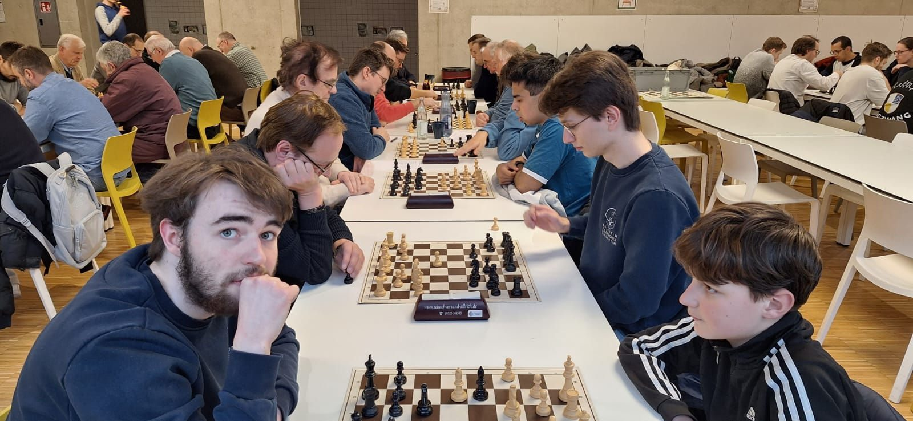
Garchinger Mannschaftsblitz 2026
Beim diesjährigen Garchinger Mannschaftsblitz (aka offene Münchner Blitz-Mannschaftsmeisterschaft) waren wir mit drei Mannschaften vertreten.
Bericht lesen →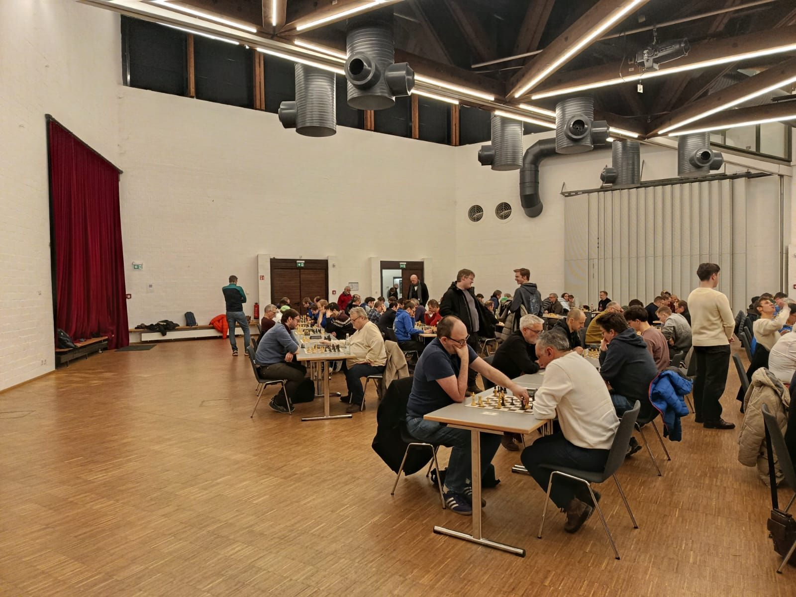
Lars ist der Münchner Schnellschachmeister 2026!
Beim 23. Garchinger Dreikönigsturnier konnte Lars mit starken 7,5 aus 9 Punkten (ohne Verlustpartie!) den 2. Platz erobern und ist damit der Münchner Schnellschachmeister 2026!
Bericht lesen →Vergangene Jahre
2025
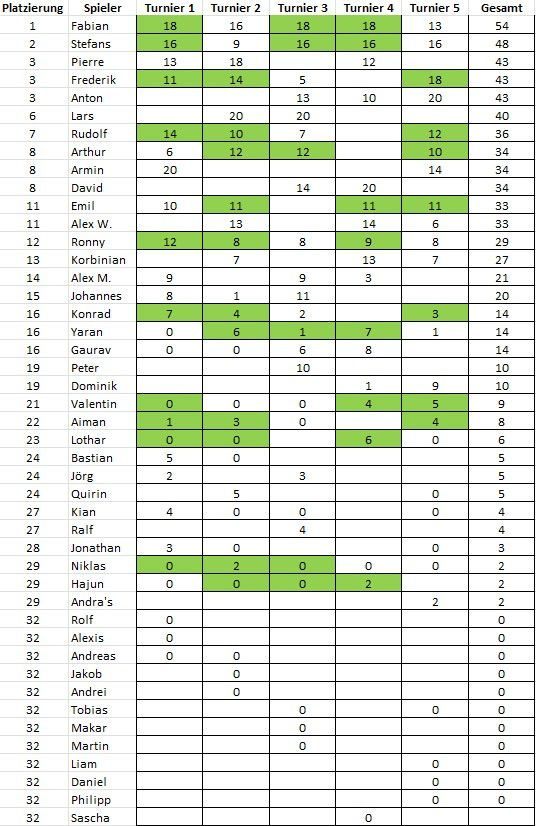
Fabian gewinnt die Blitzjahreswertung 2025!
Die Turniere der Blitzjahreswertung waren auch im Jahr 2025 gut besucht!
Bericht lesen →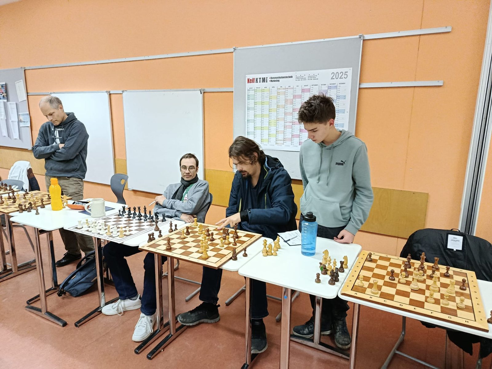
Simultan mit IM Lars Goldbeck
Zum dritten Mal (2017 als Kleinmeister, 2021 als FIDE-Meister und nun 2025 als frisch gebackener internationaler Meister!) wagte sich Lars mutig in die "Hölle von Kirchheim" um es mit 35 Gegnern …
Bericht lesen →3. Platz beim Blitzturnier in Ebersberg
Am 21.11.2025 fand das Jubiläumsblitzturnier in Ebersberg statt. Mit 72 Teilnehmern und 9 Titelträgern (3 IM, 6 FM) war das Turnier nicht nur gut besucht, sondern auch stark besetzt.
Bericht lesen →SG-AFK Mannschaften erfolgreich
Am 17.10.2025 starteten die Senioren der Schachgemeinschaft AFK mit dem Spiel gegen die 2. Seniorenmannschaft von Haar in die diesjährige Spielsaison des Bezirks.
Bericht lesen →Schnellschach-VM 2025
Stefans gewinnt die diesjährige Schnellschachmeisterschaft ungeschlagen mit 4,5 aus 5 Punkten!
Bericht lesen →Münchener Schnellschach-MM 2025
Am 03. August fand in Ismaning die Offene Münchner Schnellschach-Mannschaftsmeisterschaft 2024/2025 statt. 14 starke Vierermannschaften spielten um die Plätze.
Bericht lesen →Sommerblitz 2025
Das diesjährige Sommerblitz (Bedenkzeit 5min + 2s Inkrement) konnte Lars klar mit 8,5 aus 9 Punkten für sich entscheiden!
Bericht lesen →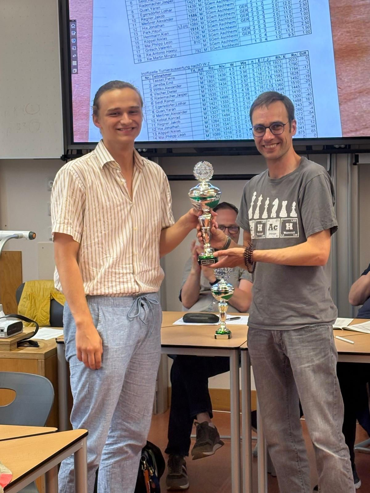
Vereinsmeisterschaft 2025 beendet
Die Vereinsmeisterschaft 2025 war mit 19 Teilnehmern deutlich besser besucht als im Vorjahr womit sich die klassische Durchführung der Vereinsmeisterschaft an fünf Freitagabenden wohl dauerhaft …
Bericht lesen →Mitgliederversammlung und Sommerfest 25.07.2025
Am Freitag, 25.07.2025, ab 18:30 Uhr findet unsere jährliche Mitgliederversammlung statt. Danach - ab ca. 20:00 Uhr das Sommerfest.
Bericht lesen →Alex Wittko ist Pokalsieger 2025!
Nach langer Schlacht hat sich Alex W. am letzten Freitag (11.07) gegen Pierre durchsetzen können und ist damit nicht nur Jugendvereinsmeister 2025, sondern auch SG AFK Pokalsieger 2025!
Bericht lesen →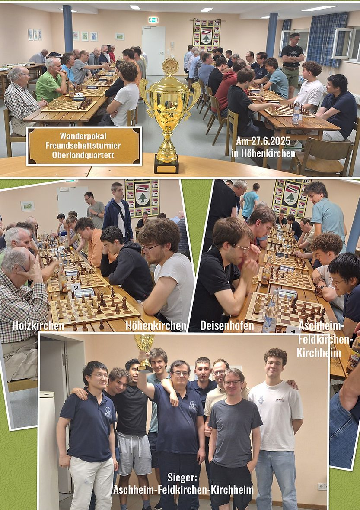
Historischer Sieg im Oberlandquartett.
Am 27. Juni 2025 fand zum 27. Mal das Traditionsturnier "Oberlandquartett" statt. Dieses Schachturnier findet jährlich nach der Mannschaftssaison statt.
Bericht lesen →Senioren auf Platz 6
Der letzte Mannschaftskampf der Senioren in der 2. Seniorenliga gegen München Nord endete mit 0,5 zu 3,5 leider klar zugunsten der Münchener. Damit erreichte das AFK-Team den 6. Tabellenplatz.
Bericht lesen →Dorothea Gundel ✝️
Die Schachgemeinschaft trauert um Dorothea Gundel, die uns am 21.März 2025 im Alter von 88 Jahren für immer verließ.
Bericht lesen →SG AFK 3 Vizemeister in der D-Klasse!
Mit weitgehend unveränderter Besetzung ging unsere 3. Mannschaft in ihre 2. Saison in der D-Klasse.
Bericht lesen →Osterblitz 2025
Das Osterblitz 2025 war mit 27 Teilnehmern gut besucht und wir spielten - nach recht demokratischer Abstimmung ;-) - 13 Runden Blitzschach (3 min + 2 s Inkrement).
Bericht lesen →SG AFK 4 gewinnt die D-Klasse!
Das ist der Artikel für die 4.Mannschaft, für die Spieler aus Aschheim, aus Feldkirchen
Bericht lesen →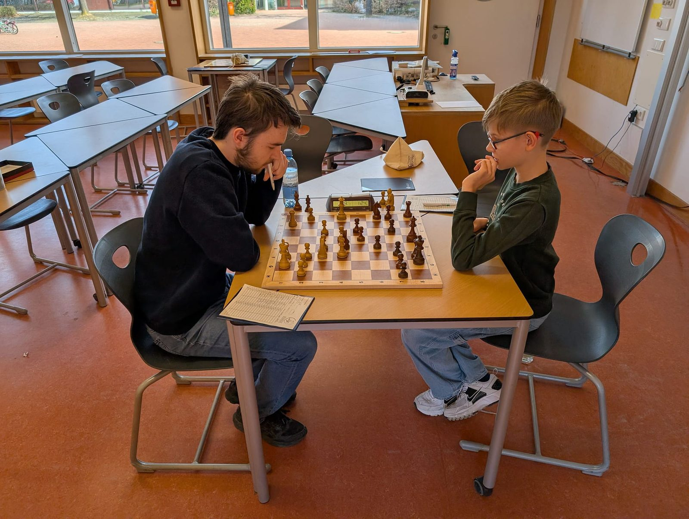
Die Jugendvereinsmeisterschaft 2025 ist beendet...
Am vergangenen Wochenende fand die Jugend-Vereinsmeisterschaft 2025
Bericht lesen →Senioren erfolgreich gegen Bayern München 2
Am 28.02.2024 begrüßten die Senioren der Schachgemeinschaft AFK die 2. Seniorenmannschaft von Bayern München zur 5. Runde in der zweiten Seniorenliga.
Bericht lesen →Wahnsinn: Remis gegen einen Großmeister!
Obwohl das Spitzenspiel in der Bezirksliga gegen die Schachfreunde München knapp mit 4,5 zu 3,5 verloren wurde, hat das Match für die Schachgemeinschaft Aschheim/Feldkirchen/Kirchheim (AFK) viele …
Bericht lesen →Vereinspokal 2025 gestartet!
Der Vereinspokal ist mit 16 Teilnehmern wieder sehr vernünftig besetzt, da man im Sinne des KO-Systems für ein 5-rundiges Turnier 32 Teilnehmer (oder zumindest eine verwandte Teilnehmerzahl) …
Bericht lesen →U20 Landesliga Süd: Vizemeister!
Unsere Jugendlichen haben in der U20 Landesliga Süd eine gute Saison gespielt und den 2. Platz erreicht!
Bericht lesen →3. Platz beim 4er-Pokal auf Münchner Ebene
Nachdem die Schachfreunde am heutigen Sonntag besseres zu tun hatten als sich mit uns zu duellieren, haben wir gratis den 3. Platz beim Viererpokal errungen!
Bericht lesen →MMM: 1. Februar-Runde
Nach ihrem dritten Platz im Vorjahr träumt derzeit die 1. Mannschaft der Schachgemeinschaft Aschheim/Feldkirchen/Kirchheim vom Aufstieg in die Regionalliga.
Bericht lesen →Siegesrausch bei den MMM
Die 1. Mannschaft schlug den gewiss nicht schwachen Münchener SC 1836 3 mit 5 zu 3 Punkten und ist dadurch punktgleich mit den Schachfreunden München 1 an der Tabellenspitze der Bezirksliga.
Bericht lesen →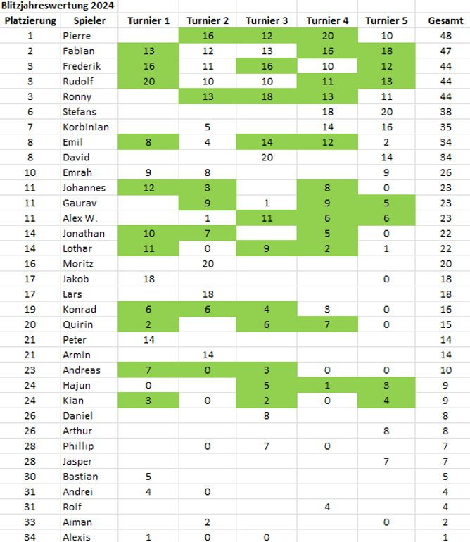
Weihnachtsblitz 2024 und Blitzjahreswertung 2024
Stefans gewinnt das Weihnachtsblitz 2024 knapp vor Fabian (punktgleich bei besserer Buchholz) und das Duo meldet damit schon mal Interesse am Gesamtsieg 2025 an ;-)
Bericht lesen →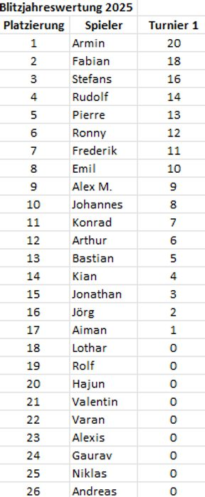
Neujahrsblitz 2025
Unser Neujahrsblitz war mit 26 Teilnehmern gut besucht und wir spielten 7 Runden Schweizer System bei 10 min Bedenkzeit.
Bericht lesen →Münchner Jugend-Einzelmeisterschaften 2025
Von unserem Verein waren Alex Wittko (U16), Poldi Elger (U14) und Philipp Mai (U12) bei den Münchner Jugend-Einzelmeisterschaften vertreten.
Bericht lesen →2024
U16 Münchner Mannschaftsmeisterschaft
Alex W., Konrad, Hajun, Kian, Philipp und Valentin haben eine sehr erfolgreiche U16-Mannschaftsmeisterschaft gespielt.
Bericht lesen →Licht und Schatten im 4er-Pokal...
Im Mannschaftspokal konnten sich Lars, Cedric, Arthur und Fabian klar mit einem 3:1 gegen Garching durchsetzen und erreichen somit das Halbfinale, welches am 26.01.25 stattfindet!
Bericht lesen →Eine Superwoche für die Annalen...
Den Anfang machte die erste Mannschaft mit ihrem Ausflug zur Schachunion München. Den Grundstock lieferte Stefans Kasims, der mit einem Mehrbauern sein Spiel geduldig durchzog und für das 1:0 sorgte.
Bericht lesen →Neues von den Mannschaftsmeisterschaften
Mit einem "etwas" glücklichem 5:3 Heimsieg gegen den SK München Südost 2 festigte die erste Mannschaft ihren Spitzenplatz in der Bezirksliga.
Bericht lesen →MMM 2025: Ein perfekter Start
Einen besseren Start zum Auftakt der Mannschaftskämpfe 2024/25 hätte sich die Schachgemeinschaft Aschheim/Feldkirchen/Kirchheim nicht wünschen können.
Bericht lesen →Schnellschach Vereinsmeisterschaft 2024
Der Sommer ist vorbei und die Schachaktivitäten nehmen zu.
Bericht lesen →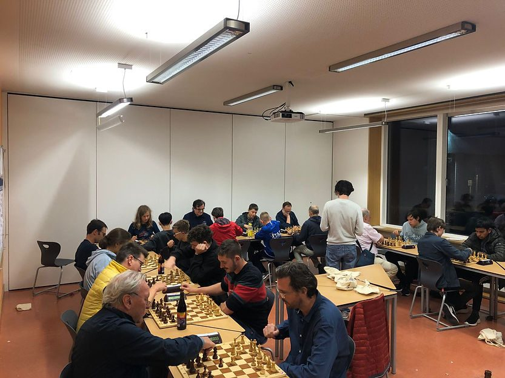
Herbstblitz 2024
Ende der Sommerpause … endlich wieder Blitzschach en masse!
Bericht lesen →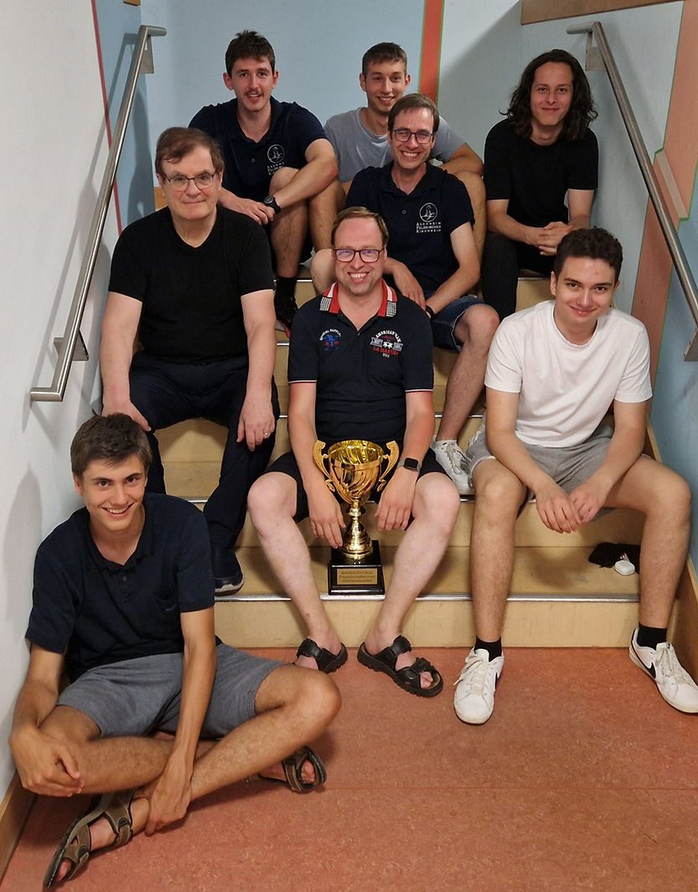
Oberlandquartett 2024
Das diesjährige Oberland"quartett" (Holzkirchen war diesmal leider nicht dabei) fand bei uns in Kirchheim statt.
Bericht lesen →Vereinsmeisterschaft 2024
Wir haben in diesem Jahr die Vereinsmeisterschaft zum ersten Mal als Wochenendturnier (eine Runde am Freitag und Samstag und Sonntag jeweils zwei Runden) gespielt.
Bericht lesen →Vereinspokal 2024
Der Vereinspokal 2024 ist abgeschlossen und der neue Vereinspokalsieger ist - langweilig! - der Titelverteidiger Pierre Tassell.
Bericht lesen →Mannschaftssaison 2023/24
Am 16. Oktober 2023 wurde vom Schach-Bezirksverband München für acht Ligen der Startschuss gegeben. Am 26. April 2024 standen die Abschlusstabellen fest.
Bericht lesen →2. Platz in der U20
Am 24.2. und 25.2. startete die Münchner Mannschaftsmeisterschaft der U20 mit den ersten 4 Runden.
Bericht lesen →Osterblitz 2024
Unser diesjähriges Osterblitz war so stark wie noch nie besetzt und mit 28 Teilnehmern auch richtig gut besucht!
Bericht lesen →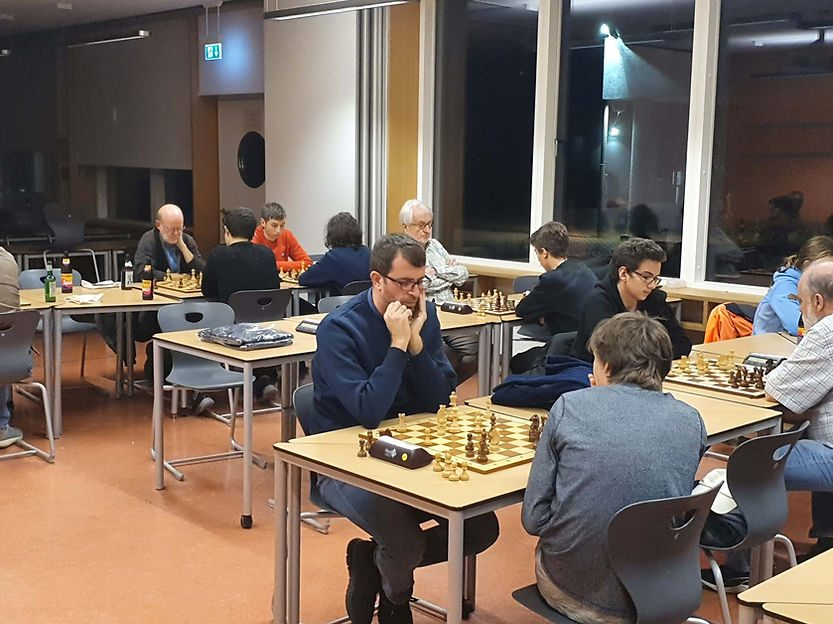
Ein Vereinsabend
So sieht ein normaler Spielabend in einem der Räume statt.
Bericht lesen →Münchner Mannschaftsmeisterschaften 2024
Erstmals mit vier Mannschaften ist die Schachgemeinschaft Aschheim/Feldkirchen/Kirchheim bei den Meisterschaften des Bezirkverbandes München dabei.
Bericht lesen →3 Mannschaftskämpfe,3 Ligen und 3 Siege!
Der letzte Freitag wird sicher in die Annalen des Vereins vermerkt werden:
Bericht lesen →2023
Herbstblitz 2023
Das 4. Turnier unserer Blitz-Jahreswertung (diesmal wurde rasant mit 3 min Bedenkzeit gespielt) hat David souverän vor Ronny und Pierre gewonnen!
Bericht lesen →Vereinsmeisterschaft 2023 (abgeschlossen)
Die Vereinsmeisterschaft 2023 ist beendet und Pierre ist mit 4,5 Punkten (aus 5 Partien) die Titelverteidigung gelungen!
Bericht lesen →Sommerblitz 2023
Nachdem wir uns (dank der Mitgliederversammlung) schon warm gedacht und (dank Quirin!) kulinarisch gestärkt hatten, konnte das Sommerblitz um 19:45 Uhr beginnen.
Bericht lesen →Stadtmeisterschaft 2023
Armin gewinnt souverän mit 4,5 aus 5 Punkten die Kirchheimer Stadtmeisterschaft 2023 und wird damit en passant Schnellschach-Vereinsmeister 2023!!!
Bericht lesen →Oberlandquartett: Mission Titelverteidigung
Am 23. Juni 2023 begegneten sich die vier Schachvereine (Deisenhofen, Holzkirchen, Höhenkirchen und die SG AFK) beim traditionellen Oberlandquartett, das inzwischen zum 25. Mal stattfand.
Bericht lesen →Qualifikation zur Deutschen Amateurmeisterschaft
Rainer Seidl hat beim Qualifikationsturnier zur Deutschen Amateurmeisterschaft in Darmstadt den 3.
Bericht lesen →Osterblitz 2023
Unser (extrem) offizielles Osterturnier 2023 war mit 20 Spielern trotz der Abwesenheit des größten Teils unserer 10.
Bericht lesen →Niederlage gegen Roter Turm in der Seniorenliga
Bei der vorletzten Runde der 1. Seniorenliga war der SC Roter Turm Altstadt zu Gast.
Bericht lesen →Klassenerhalt in der Bezirksliga!
Drei sind aller guten Dinge und so hat auch unsere 1. Mannschaft den Klassenerhalt in der Bezirksliga - "etwas" glücklich ;-) - geschafft, nachdem zuvor schon die 2.
Bericht lesen →Bayerischer U20-Mannschafts-Vizemeister!!!
Mission Completed: Unsere erste U20 Mannschaft hat es geschafft sich den Bayerischen Vizemeister-Titel in der Bayernliga, der höchsten Jugendliga des Freistaats, in einer spannenden Endrunde zu …
Bericht lesen →Bayerische U16 Meisterschaften 2023
Fabian Müller hat bei der Bayerischen U16 Meisterschaft 2023 in Bad Kissingen einen starken 6. Platz erreicht!
Bericht lesen →Reykjavik Open 2023
Einen Ausflug der besonderen Art unternahmen die zwei besten Jugendlichen der Schachgemeinschaft Aschheim/Feldkirchen/Kirchheim: David Mehlhorn und Arthur Krumm nahmen zwischen dem 29. März und dem 4.
Bericht lesen →Seniorenkampf gegen MSC: Ehrenvolle Niederlage
Mit der denkbar besten Mannschaft trat der Münchener SC 1836 bei der dritten Runde der Seniorenmeisterschaft in Kirchheim an.
Bericht lesen →Senioren: Unentschieden gegen FC Bayern 1
Die Seniorenmannschaft konnte mit einem 2:2 gegen den FC Bayern einen wichtigen Punkt gegen den Abstieg verbuchen.
Bericht lesen →Jugend-Vereinsmeisterschaft Runde 1
Unsere Jugend-Vereinsmeisterschaft hat in Abwesenheit der U25-Fraktion (die nur durch Rapahel vertreten ist) einige mutige "Neu"zugänge zu verzeichnen: Konrad Keblat, der schon über viel …
Bericht lesen →Gelungener Start in der Bezirksliga
Der Saisonstart in der Bezirksliga glückte uns diesmal besser und wir starten mit einem Sieg in die Saison 2022/23!
Bericht lesen →DWZ-Turnier: (partielle) Finalrunde
Unsere finale Runde des DWZ-Turniers ist durch einige krankheitsbedingte Ausfälle partiell ins neue Jahr vertagt, dennoch sind schon erste Gratulationen möglich:
Bericht lesen →Bayernliga Doppelrunde in Augsburg
Die Bayernliga-Doppelrunde in Augsburg war im Wesentlichen erfolgreich:
Bericht lesen →Münchner Jugend-Einzelmeisterschaft 2023
Am letzten Wochenende fand vom 17.02 bis 19.02.23 die Münchner Jugend Einzelmeisterschaft 2023 statt. Mit 115 Teilnehmern wurde ein neuer Teilnehmerrekord aufgestellt.
Bericht lesen →Doppelsieg bei der MMM
Die erste und zweite Mannschaft haben einen erfolgreichen Freitag hinter sich und machen jeweils einen wichtigen Schritt in Richtung Klassenerhalt!
Bericht lesen →Sieg gegen Garching 1 bei der MSenMM!
Unser Seniorenteam besiegt im ersten Saisonspiel die im Schnitt um 80 DWZ-Punkte höher gewertete Mannschaft aus Garching mit 2,5 zu 1,5!
Bericht lesen →Seniorenkampf gegen Deisenhofen: Eine würdevolle Niederlage
Die auf dem Papier klar stärkere Mannschaft des SF Deisenhofen erwies sich für die Senioren des SG AFK auch in der Realität als zu stark.
Bericht lesen →Erfolgreicher Saisonauftakt in der Bayernliga
Mit einem "etwas" glücklichen 4:2 gewinnt unsere Bayernligamannschaft (Arthur, David, Fabian, Andra's, Aiman und Emil) ihr erstes Heimspiel gegen unseren Nachbarn Garching.
Bericht lesen →DWZ-Turnier Runde 1
Unser DWZ-Turnier für Spieler mit einer Spielstärke von DWZ < 1410 war am gestrigen Abend gut besucht.
Bericht lesen →DWZ-Turnier (concluded)
Unser DWZ-Turnier ist nunmehr beendet und es ergibt sich folgendes Bild:
Bericht lesen →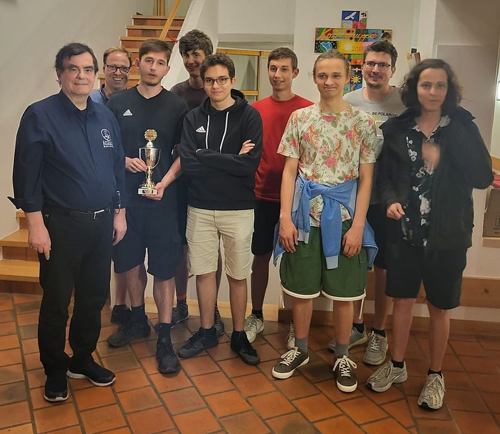
Sieger im Oberlandquartet 2023
Das ist die Siegermannschaft im Oberlandquartet 2023. Vier starke Mannschaften aus dem Münchener Umland spielten um den Sieg in Schnellschach-Partien.
Bericht lesen →2022
Weihnachtsblitz 2022
Aufgrund des Seniorenkampfes am Freitag musste unser Weihnachtsblitz um einen Tag vorverlegt werden...
Bericht lesen →Stadtmeisterschaft 2022
Unsere Stadtmeisterschaft 2022 war mit 57 Startern gut besucht und hat mit der Deutschen Vize-Schnellschachmeisterin 2022 eine würdige Siegerin gefunden!
Bericht lesen →DWZ-Turnier Runde 4
In der 4. Runde unseres DWZ-Turniers für Spieler mit DWZ<1410 gab es am Freitag viele spannende und interessante Begegnungen:
Bericht lesen →Schnellschach-Vereinsmeisterschaft 2022
Am Freitag hat unsere diesjährige Schnellschach-Vereinsmeisterschaft stattgefunden und wir haben einen neuen Schnellschach-Vereinsmeister:
Bericht lesen →4. Platz in der Bayernliga: Glück ist keine Laterne...
Das Glück war uns leider am letzten Spieltag nicht hold und so reichte es trotz eines geschenkten Punktes auf Brett 6 (Korbinian war arbeitslos) leider nur für ein 2:4 gegen Augsburg.
Bericht lesen →Vereinsmeisterschaft 2022 (abgeschlossen)
Die Vereinsmeisterschaft ist abgeschlossen und wir haben eine "klare" Tabellensituation: Julian gewinnt das Turnier souverän mit 4,5 Punkten, kann aber mangels Vereinszugehörigkeit nicht …
Bericht lesen →"Summer is out" - Blitzturnier
Unser "Reboot-Turnier" nach den Sommerferien war mit 18 Startern gut besucht und die Ferienerholung konnte man bei 17 Runden Hochgeschwindigskeitsblitz (3 Minuten ohne Inkrement) auch gut gebrauchen …
Bericht lesen →Sieg beim Oberlandquartett 2022
Einen nicht unbedingt erwarteten Sieg verbuchte die Schachgemeinschaft beim schon fast traditionellen Oberlandquartett.
Bericht lesen →Ein bewegtes Wochenende in der Bayernliga...
Unser Bayernligateam (in der Besetzung Arthur, David, Fabian, Andra's, Aiman, Korbinian mit Teammanager Andreas) hat ein bewegtes Wochenende hinter sich: Nach einem soliden Remis gegen Kelheim am …
Bericht lesen →U20-Bezirksliga 2
In der Münchner U20-Bezirksliga 2 hat unser zweites Team sich würdevoll geschlagen und einen soliden vierten Platz (bei acht Teams insgesamt) erreicht!
Bericht lesen →Münchner Jugend-Blitzschachmeisterschaft
Bei der Münchner Jugend-Blitzmeisterschaft hat Emil einen super starken 3. Platz erreicht und nur knapp die Qualifikation für die bayerischen Meisterschaften verpasst!
Bericht lesen →Erster Mannschaftspunkt in der Bezirksliga!
In der zweiten (bzw. formal gesehen dritten) Runde gelang es uns den ersten Mannschaftspunkt (in der Vereinsgeschichte der SG AFK) in der Bezirksliga nach Hause zu holen!
Bericht lesen →Vereinsmeisterschaft 2022
Der Aufruf zu unserer ersten Vereinsmeisterschaft seit 2019 wurde gut aufgenommen und so fand sich am gestrigen Abend eine buntgemischte Truppe aus jung und alt zusammen um die erste Runde zu …
Bericht lesen →Starker Auftakt in der Bayernliga...
Der Einstand von Arthur, David, Fabian, Andra's, Mesut und Aiman in der Bayernliga ist super gelungen!
Bericht lesen →Pokal Finals...
Coronapokal David gewinnt mit einem (recht) opferfreudig vorgetragenem Königsangriff gegen Andra's.
Bericht lesen →Osterblitz 2022
Beim diesjährigen Osterblitz war das Teilnehmerfeld etwas ausgedünnt, da parallel das Auswärtsspiel der Senioren gegen die Union (ging leider mit 2,5 zu 1,5 an die Union), die …
Bericht lesen →Bayerische U16-Meisterschaften
Fabians Ausflug zur bayerischen U16-Meisterschaft in den Osterferien gestaltete sich würdevoll. In einem sehr homogen besetzten Teilnehmerfeld startete er als 11. von 24.
Bericht lesen →Sieg gegen Deisenhofen in der Bezirksliga
Am Freitag den 29.04.22 konnte unsere erste Mannschaft ihren ersten Sieg in der Bezirksliga gegen Deisenhofen verbuchen und hat damit einen wichtigen Schritt Richtung nicht-Abstieg gemacht!
Bericht lesen →2021
DSJ-Weihnachtsturnier 2021
Arthur (4 aus 7; Leistung: 1899), David (4,5 aus 7; Leistung: 1874), Fabian (4 aus 7; Leistung: 1819), Andra's (4,5 aus 7; Leistung: 1694), Aiman (4,5 aus 7; Leistung: 1562) und Emil (3,5 aus 7 …
Bericht lesen →David gewinnt das Weihnachtsblitz
David lässt uns im alten Jahr noch mal alle alt ausschauen ;-) und marschiert einmal (fast) ohne Gnade durchs Teilnehmerfeld.
Bericht lesen →U20: Klassenerhalt der 2. Mannschaft
Unsere zweite U20-Mannschaft hat mit 5 aus 14 würdevoll die Klasse gehalten und darf in der nächsten Saison wieder in der Bezirksliga 1 antreten.
Bericht lesen →Schnellschach-Vereinsmeisterschaft reloaded
Nach sieben Jahren Pause war es endlich wieder soweit: Die Schnellschach-Vereinsmeisterschaft unserer Schachgemeinschaft wurde ausgetragen!
Bericht lesen →Wir rocken die (Jugend) Landesliga (Süd)!
Vom 24.7.- 25.7. fanden die ersten 4 Runden der U20 Landesliga Süd statt, an der unsere Jugend das erste Mal teilnimmt.
Bericht lesen →Jugend goes Innsbruck Open
Vom 20 – 29 August war die Jugendmannschaft der SG AFK in Innsbruck, um an einem internationalen Turnierteilzunehmen.
Bericht lesen →Arthur gewinnt das Sommerturnier 2021
Arthur setzt sich - nach einer wackeligen ersten Runde gegen Gaurav ;-) - beim Sommerturnier souverän durch und gewinnt vor David und Andra's, die beide ebenfalls ein starkes Turnier spielen!
Bericht lesen →Auf Erfolgskurs in der U20-Bayernliga
Die Erfolgsgeschichte unseres ersten U20-Teams geht weiter:
Bericht lesen →Rudolf dominiert das Sommerblitz
Unser Sommerblitz - das nach der Vereinsversammlung am Freitag den 23.07.21 stattfand - war mit 21 Spielern gut besucht.
Bericht lesen →Osterturniere 2021
Am Ostersonntag nahmen Fabian und Emil am Moosacher Online-Open teil und erspielten in ihren Altersklassen gute Ergebnisse:
Bericht lesen →Korbinian ist nicht aufzuhalten...
Korbinian hat es schon wieder getan ... mit einem (großmeisterlichen) Remis gegen Fabian in der letzten Runde sichert er sich den Gesamtsieg. Gratulation!
Bericht lesen →Korbinian gewinnt Gruppe 1
Korbinian Ruff gewinnt mit einem Sieg in der letzten Runde gegen Arthur Krumm souverän mit 4,5 aus Punkten 5 die Gruppe 1! Gratulation zu diesem tollen Ergebnis!
Bericht lesen →Alex gewinnt Gruppe 3
Alex Roth spielt in der letzten Runde Remis gegen Rainer Seidl (ausgekämpft!) und gewinnt damit Gruppe 3! **
Bericht lesen →Deutsche Lehrermeisterschaft 2021
Die Deutsche Lehrermeisterschaft wurde in diesem Jahr coronabedingt online ausgetragen.
Bericht lesen →2020
Weihnachtsblitz 2020
Das Weihnachtsturnier musste in diesem Jahr leider - aus gut bekanntem Grund ;-) - online ausgetragen werden.
Bericht lesen →Erfolg beim U16-Weihnachtsturnier der DSJ
Unser erstes U16-Team∗ (David, Andra's, Fabian und Aiman) hätte es beim Weihnachtsturnier der DSJ fast aufs Treppchen geschafft und wurde am Ende nur knapp durch die Feinwertung von Kiel und …
Bericht lesen →Saisonüberblick 19/20
Die Saison 19/20 ist - trotz Corona - für unsere Mannschaften gut verlaufen:
Bericht lesen →GyKi mit Hilfe der SG-AFK zur Deutschen Schachschule gekürt...
Am Freitag, den 25. September 2020 war es im Gymnasium Kirchheim so weit:
Bericht lesen →Münchner Mannschaftsmeisterschaften – 1. und 2. Mannschaft, Seniorenmannschaft, Jugendmannschaften
Im Zuge der Corona-Virus-bedingten Kontaktbeschränkungen wurde die Saison 2019 / 20 der Münchner Schach-Mannschafts-Meisterschaften unterbrochen.
Bericht lesen →Team Battle gegen Markt Schwaben
Unser Teambattle am 15.05.20 auf lichess.org gegen den SK Markt Schwaben war eine richtig nette Geschichte!
Bericht lesen →1. SG AFK Online-Blitzserie 2020
Endergebnis des ersten Online-Blitzschachturniers der Schachgemeinschaft AFK:
Bericht lesen →2019
Ermutigender Start in die neue Saison der Münchner Mannschaftsmeisterschaften
Nachdem sowohl unsere 2.
Bericht lesen →Münchner U16-Meisterschaft 19/20
Die Münchner U16-Meisterschaft am letzten Samstag (09.11.19) verlief für unser Team wie geplant.
Bericht lesen →David MEHLHORN verteidigt den Vereinsjugend-Pokal // Finale des Vereins-Pokals am 29. November
Am Abend des 8.
Bericht lesen →Vereinsturnier 2019 - Sieger : Arthur KRUMM
Unser Vereinsturnier 2019 hat am Freitag, den 19. Juli, mit den Partien der 5. und letzten Runde seinen Abschluss gefunden.
Bericht lesen →Vereins-Blitzschach-Meisterschaft 2019
Unsere diesjährige Vereins-Blitzmeisterschaft wird an 4 Spielabenden ausgetragen.
Bericht lesen →Erfolgreiche Saison für alle Mannschaften
Die Saison 2018 / 19 war für alle 4 Mannschaften der Schachgemeinschaft Aschheim – Feldkirchen - Kirchheim überaus erfolgreich und hat selbst optimistische Erwartungen übertroffen :
Bericht lesen →Aufstieg in die 1. Münchner Seniorenliga
Am letzten Spieltag in der 2. Münchner Seniorenliga reisten wir als Tabellenzweiter zum Tabellenführer Schach-Union München.
Bericht lesen →2018
Weihnachts-Blitzschach-Turnier 2018 - Sieger : Rudolf OSTER
Wie bereits gute Tradition, fand am letzten Freitag vor Weihnachten unser Weihnachts-Blitzschachturnier statt.
Bericht lesen →Erfolge bei den Münchner U16 Mannschafts-Meisterschaften und bei den Münchner Schüler-Einzelmeisterschaften
Bei den diesjährigen Münchner U16 Mannschaftsmeisterschaftenerrang unsere U16 Mannschaft den unerwarteten und beeindruckenden zweiten Rang.
Bericht lesen →Vereins-Blitzmeisterschaft 2018 - Sieger : Frederik PRAUSE
Am Freitag, den 14. September, wurde unsere diesjährige Vereinsblitzmeisterschaft in den Räumlichkeiten unseres Vereins-Schule-Kooperations-Partners, des Gymnasiums Kirchheim, ausgetragen.
Bericht lesen →Vereins-Jugend-Pokal 2018
Dank des Zuwachses an Jugendspielern in unserer Schachgemeinschaft sowie der sich schnell entwickelnden Spielstärke unserer jungen Vereinsmitglieder konnte in diesem Jahr erstmalig ein …
Bericht lesen →Erfreuliche Platzierungen in den Münchner Mannschafts-Meisterschaften und in der Jugendbezirksliga
Dank der stetig zunehmenden Spielstärke und Turniererfahrung unserer jugendlichen Vereinsmitglieder hat die Schachgemeinschaft Aschheim-Feldkirchen-Kirchheim in der Saison 2017/18 erstmalig mit drei …
Bericht lesen →Vereins-Pokal 2018 : Sieger Pierre Tassell
Herzlichen Glückwunsch an unseren Pokalsieger 2018 Pierre Tassell !
Bericht lesen →2017
Vereinsturnier - Hauptgruppe - Endstand
Nunmehr sind auch alle Partien der Hauptgruppe unseres Vereinsturniers 2017 gespielt und es ergibt sich folgender Endstand :
Bericht lesen →Dieter Vischer gewinnt die Vereins-Meisterschaft 2017 // hartes Ringen um den Aufstieg in die Meistergruppe 2018
Wir gratulieren unserem neuen Vereinsmeister Dieter VISCHER sowie den nächstplatzierten Spielern Bernd NOWOTNY, Horst HAHN und Helmut KAUFMANN !
Bericht lesen →2016
1. Mannschaft erreicht in den Münchner Mannschafts-Meisterschaften 2016 in der B-Klasse einen 2. Platz
Die 1. Mannschaft der Schachgemeinschaft Aschheim / Feldkirchen / Kirchheim hat in den Münchner Mannschafts-Meisterschaften 2016 in der B-Klasse einen beachtlichen 2. Platz erreicht.
Bericht lesen →Gruppensieg bei den Münchner Senioren-Mannschaftsmeisterschaften 2016/17
Unsere Senioren-Mannschaft konnte am Freitag, den 9. Dezember, ihren beeindruckenden "Durchmarsch" in der 2.
Bericht lesen →2. Mannschaft erreicht in den Münchner Mannschafts-Meisterschaften in der D-Klasse einen 3. Platz
Zwei Wochen nach dem letzten Spieltag der B-Klasse (wie berichtet hat die 1. Mannschaft der Schachgemeinschaft hier einen 2.
Bericht lesen →Vereinsturnier 2016 - Ergebnisse 4. Runde / Spielpaarungen 5. Runde
Am Abend des 21. Oktober wurde die 4.Runde unseres Vereinsturniers ausgetragen sowie die Spielpaarungen der 5. Runde wie folgt ermittelt :
Bericht lesen →Schach-Gemeinschaft AFK kann Vorjahres-Sieg im "Oberlandquartett" nicht wiederholen
Am Freitag, den 8. Juli, ist unsere Schachgemeinschaft der Einladung des Schachvereins Holzkirchen zur Teilnahme am diesjährigren "Oberlandquartett" gefolgt.
Bericht lesen →Vereinspokal-Sieger 2016 : Armin TOBISCH
Am Freitag, den 19. Februar, ging das Pokalturnier 2016 der Schachgemeinschaft Aschheim / Feldkirchen / Kirchheim zu Ende.
Bericht lesen →2015
Vereinsturnier 2015 - Hanspeter Hecht erneut Vereinsmeister
Am Ende eines spannenden Vereisturniers konnte Hanspeter HECHT mit 6,5 Punkten / 7 Partien seinen Vereinsmeister-Titel erfolgreich verteidigen.
Bericht lesen →Weihnachtsblitzturnier 2015
Am letzten Vereinsabend vor Weihnachten, Freitag, den 18. Dezember, fand traditionell das Weihnachtsblitzturnier der Schachgemeinschaft Aschheim / Feldkirchen / Kirchheim statt.
Bericht lesen →Münchner Mannschaftsmeisterschaften 2015
Bei den diesjährigen Münchner Mannschaftsmeisterschaften konnte keiner unserer beiden Mannschaften einen Platz im Vorderfeld ihrer jeweiligen Liga erreichen.
Bericht lesen →Schachgemeinschaft spielt 2:2 im Ligapokal 2015
Das Münchner Ligapokalturnier (MLPT) wird jede Saison von November bis Februar an mehreren Sonntagen ausgetragen. Teilnahmeberechtigt sind alle Vereine des Schachbezirks mit bis zu drei Mannschaften.
Bericht lesen →Schach für Kinder und Jugendliche
Die Schachgemeinschaft Aschheim-Feldkirchen-Kirchheim lädt alle interessierten Kinder und Jugendliche ab 6 Jahren herzlich zum Schachspielen ein.
Bericht lesen →Blitzschach-Meisterschaft 2015
Am Freitag, den 4. September, wurde die Vereins-Blitzschachmeisterschaft 2015 ausgetragen.
Bericht lesen →Schach-Gemeinschaft AFK gewinnt Freundschaftsturnier "Oberlandquartett" 2015
Am Freitag, den 17. Juli, ist unsere Schachgemeinschaft der Einladung des Schachvereins Höhenkirchen zur Teilnahme am diesjährigren "Oberlandquartett" gefolgt.
Bericht lesen →